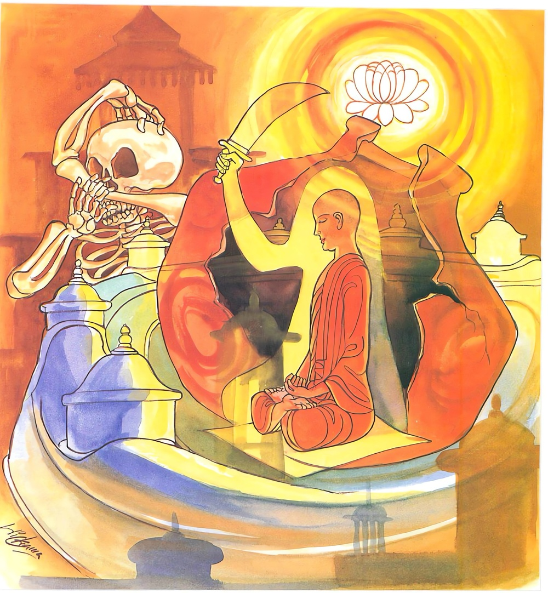

3-6 සයවන පන්සීයක් විදර්ශක භික්ෂූන්ගේ වස්තුවයි.
මෙම කතාව සද්ධර්ම සාගරයෙන් ද කියවන්න.
කුම්භූපමං කායමිමං විදිත්වා නගරූපමං චිත්තමිදං ඨපෙත්වා.
යොධෙථ මාරං පඤ්ඤායුධෙන ජිතඤ්ච රක්ඛෙ අනිවෙසනො සියා.
මේ ශරීරය කුඹල්බඳුනක් වැනි යැ යි දැන, මේ විදර්ශනාචිත්තය ස්ථිර නුවරක් සේ තබා, ප්රඥා නැමැති ආයුධයෙන් ක්ලේශමාරයා පහරින්නේ ය. උපදවන ලද තරුණ විදර්ශනාව රක්නේ ය. සමාපත්තිය ගෙය කොට ගෙණ එහි නො වසන්නේ ය.

කුම්භූපමං ආදි මේ ධර්මදේශනාව ශාස්තෘන්වහන්සේ සැවැත්නුවර වාසය කරන කාලයෙහි පටන්ගත් විපස්සනාභාවනානුයෝගී භික්ෂූන් උදෙසා දේශනා කළසේක. සැවැත්නුවර පන්සීයක් පමණ භික්ෂූහු බුදුන් හමුවෙහි රහත්වීම දක්වා කමටහන් ඉගෙන මහණදම් පුරම්හයි යොදුන් සියයක මග ගෙවා එක් බොහෝ මිනිසුන් වෙසෙන ගමකට පැමිණියාහුය. මිනිස්සු උන්වහන්සේලා දැක පැනවූ ආසනවල වඩාහිඳුවා, ප්රණීත කැඳබත් ආදිය වළඳවා ස්වාමීන්වහන්සේලා කොහි වඩිනාසේක්දැයි ඇසූහ. පහසු තැනකටයයි කීකල්හි, ස්වාමීනි, මේ තෙමස මෙහිම වැඩසිටිනු මැනවි. අපිත් ඔබවහන්සේලා ළඟ තිසරණයෙහි පිහිටා සිල්රකින්නෙමුයයි ඉල්ලා සිටියහ.
මිනිස්සු උන්වහන්සේලා ආරාධනය ඉවසූ බව දැන ස්වාමීනි මේ ළඟම එක් කැලෑවක් ඇත. එහි වසනුමැනවැයි කියා පිටත්කළහ. භික්ෂූහු ඒ කැලෑවට ගියහ. ඒ කැලෑවට අධිගෘහිත දේවතාවෝ, සිල්වත් ආර්යයෝ මේ කැලෑවට ආහ. ආර්යයන් මෙහි වසන කල දූදරුවන් සමග අපි මේ ගස්වලට නැගී සිටීම අයුතුයයි බිමට බැස මෙසේ සිතූහ.
මේ ආර්යයෝ මෙතන අද එක්රැයක් සිට ඒකාන්තයෙන් හෙටම ආපසු යන්නාහුය. භික්ෂූහුද දෙවෙනි දිනයේ ඇතුළුගමට පිඬුසිඟා ගොස් නැවත ඒ වනයටම ආවාහුය. දේවතාවෝ, හෙට දිනයට කවුරුන් හෝ නිමන්ත්රණය කරන්ට ඇත. එහෙයින් නැවත ආවාහුය. අද යෑමක් නැත. හෙට යනු ඇතැයි සිතූහ. මේ ආකාරයෙන් අඩමසක් පමණ බිමට බැස සිටියාහුය. ඉන්පසු දේවතාවෝ - පින්වතුන්වහන්සේලා මේ තුන්මාසය මෙහිම වසතියි සිතන්නෙමු. උන්වහන්සේලා මෙහි වසන කල අපි ගස්උඩ නැග සිටීමද නුසුදුසුය. දූදරුවන් සමග තෙමසක් බිම සිටීමද දුක්ඛදායකය. කුමක් හෝ කොට මේ භික්ෂූන් මෙතනින් පලවා හැරිය යුතුයයි සිතූහ.
පසුව ඒ රාත්රිස්ථාන දිවාස්ථානවල මෙන්ම සක්මන් කරන මළුකෙළවරත් සිඳී වෙන්වී ගිය හිස් ඇති කබන්ධරූප දැක්වීමටත් අමනුෂ්ය ශබ්ද ඇස්වීමටත් පටන්ගත්හ. භික්ෂූන්ට ඛිපිතක (කිබුහුන් යෑම) කාස (කැස්ස) ආදී රෝග ඇති විය. ඔවුහු ඔවුනොවුන්ට ඇවැත්නි ඔබට මොන රෝගයදැයි අසා මට කිබුහුන් යෑමේ රෝගය, මට කැස්ස ආදියයි කියා, මම අද සක්මන් කෙළවර හිසසුන් කබන්ධරූපයක් දිටිමි, මම දවල් ගතකරන තැන අමනුෂ්ය ශබ්දයක් ඇසීමි, මෙතැන අත්හැරිය යුතු තැනකි. අපට මෙතැන විසීම අපහසුයි. බුදුන් හමුවට යමුයි ඒ භික්ෂූහු එතැනින් නික්ම ක්රමයෙන් ගොස් බුදුන් හමුවට පැමිණ වැඳ එකත්පසෙක හිඳගත්හ.
බුදුරජාණන්වහන්සේ ඒ භික්ෂූන්ගෙන් මහණෙනි, ඇයි ඒ ස්ථානයෙහි විසීම අපහසුද? එසේය ස්වාමීනි, එහි වසන අපට මෙබඳු භයානක අරමුණු හමුවෙයි, එබඳු අපහුතා නිසා ඒ ස්ථානය හැරදැමියයුතුතැනක් යයි එය හැරදමා ඔබවහන්සේ හමුවට ආවෙමු යයි කීහ. මහණෙනි, නුඹලා ඒ ස්ථානයටම යාම වටී. ස්වාමීනි එහියන්ට අපට නොහැකියි. මහණෙනි, ඔබ එහි ගියේ ආයුධ රැගෙන නොවේ. දැන් ආයුධත් රැගෙන යන්න. ස්වාමීනි, මොන ආයුධද? ශාස්තෘන්වහන්සේ මමම නුඹලාට ආයුධ දෙන්නෙමි. මා දෙන ආයුධ රැගෙන යන්නැයි වදාරා, ‘කරණීය මත්ථකුසලෙන යන්තං සන්තංපදං අභිසමෙච්ච, සක්කො උජූ ච සූජූ ච සුවචොචස්ස මුදු අනතිමානී’ ආදී සියලු මෙත්තසූත්රය කියා, මහණෙනි, මෙය නුඹලා විහාරයෙන් පිටත ඇති වන ලැහැබේ සිට සජ්ඣායනා කරමින් ඇතුල්විහාරයට පිවිසෙව් යයි පිටත් කළහ. ඔවුහු බුදුන් වැඳ නික්මී පිළිවෙලින් එතැනට පැමිණ විහාරයෙන් පිටත සිට එකතුව සජ්ඣායනා කරමින්ම වනසණ්ඩයට පිවිසියාහුය. මුළු වනසණ්ඩයෙහි සිටි දේවතාවෝ මෛත්රීසිත් ඇතිව භික්ෂූන්ට පෙර ගමන් කොට පාසිවුරු පිළිගැනීම විචාළහ. සිරුරු මිරිකීමට ඇසූහ. ඒ භික්ෂූන්ගේ ආරක්ෂාසංවිධාන සැලසූහ. තෙල්හි දමා බැද්දවුන් මෙන් ඒ ඒ තැන නොසැලී සිටියාහුය. කිසි තැනක අමනුෂ්යහඬක් නොවීය. ඒ භික්ෂූන්ගේ සිත් එකඟ විය. ඔවුහු රාත්රිස්ථාන දිවාස්ථානවල සිට විපස්සනාවට සිත යොමුකොට ශරීරයේ ක්ෂයවීම වැනසීම ගැන භාවනා වඩා මේ ආත්මභාවය නම් බිඳෙනසුලු අර්ථයෙන්, අස්ථාවර අර්ථයෙන් කුඹල්භාජනයක් හා සමාන යයි විදර්ශනා වැඩුවාහුය. සම්මාසම්බුදුරජාණන්වහන්සේ ගඳකිළියෙහි වැඩසිටගෙනම ඔවුන් විදර්ශනාවට වැඩුණු බව දැනවදාරා ඒ භික්ෂූන් අමතා, මහණෙනි, එසේමයි, මේ ආත්මභාවය නම් බිඳෙන අරුතින් - ස්ථාවර නොවන තේරුමෙන් කුඹල්බඳුනක් හා සමාන යයි ආලෝකයක් විහිදුවා යොදුන් සියයක් දුර සිටියත් අභිමුඛයෙහි සිටින්නාක් මෙන් සවණක්රැස් විහිදුවා තමන්ගේ රූපය පෙනෙන සේ සලස්වා මේ ගාථාව වදාළ සේක.
කළයකට සිරුරුත් සිත නුවරකට සම කොට
මෙ උපමා සිහිකොට පඤ්ඤායුධය අරගෙන
මරසෙන් පරදවා යුදෙන් අත්පත් කළ ජය
රැකිය යුතු තිරකොට එයයි විදසුන් වඩන අරමුණ
එහි කුම්භූපමං යනු අබලදුබල යන අරුතින් දිගුකල් නොපවතින තාවකාලිකාර්ථයෙන් මේ කෙස්සමූහ සංඛ්යාත කය කුම්භූපමං කුළල් බඳුනකට සමානයයි දැන. නගරූපමං යනු නගරයක් නම් පිටතින් ස්ථිර වේ. ගැඹුරු ඇළවල්වලින්ද, ප්රාකාරවලින් වටකිරීමෙන්ද, දොරටු හා මුරගෙවලින්ද ඇතුළත මැනවින් තැන සතරමංසන්ධි, සිය ගණනින් යුක්ත ඇතුළත වෙළඳසැල් ආදියෙන්ද යුක්තය. එය පැහැර ගන්නෙමු යයි පිටතින් සොරු අවුත් පිවිසිය නොහැකිව පර්වතයක හැපුණාක් මෙන් ආපසු යති. එසේ නුවණැති කුලපුත්රයා තමන්ගේ විදර්ශනාසිත ස්ථිර නගරයක් සේ තබාගෙන නගරයෙහි එකතුව සිට මුවහත්කල ආදි නානාප්රකාර ආයුධවලින් සොරමුළ පලවා හරින්නාක් මෙන් විදර්ශනාමය ආර්යමාර්ග නැමති ප්රඥා ආයුධයෙන් ඒ ඒ මාර්ගවලින් නැසිය යුතු ක්ලේශමාරයන් විනාශ කොට ඒ ඒ කෙලෙස්මරුන් සමග යුද්ධ කරව්, පහරදෙව් යන අර්ථයි. ජිතං ච රක්ඛෙ යනු දිනන ලද උපදවා ගන්නා ලද තරුණ විදර්ශනාව ආවාසසප්පාය, උතුසප්පාය, භොජනසප්පාය, පුග්ගලසප්පාය, ධම්මසවණසප්පාය ආදිය සේවනය නොකර, අතරින්පතර සමාපත්තියට සමවැදී එයින් නැගිට පිරිසිදු සිතින් සංස්කාරයන් ගැන මෙනෙහි කරමින් රැකගත යුතුයි. අනිවෙසනො සියා යනු ආලය නොකිරීමයි. යම් විදියකින් යෝධයෝ යුදපිටියෙහි බලකොටු බැඳගෙන හතුරන් සමග යුද්ධ කරමින් බඩගිනි හෝ පිපාසය ඇතිවී යුදඇඳුම් බුරුල්වූ හෝ ආයුධ තමන් අතින් ගිළිහී වැටුණු විට බලකොටුවට පැමිණ විශ්රාම ගෙන කා බී යුද ඇඳුම් ලාගෙන ආයුධ අතට ගෙන නැවත ගොස් යුද්ධ කොට විරුද්ධසේනා මැඩලයිද, නොදිනූ දේ දිනා දිනූ කොටස රැක ගනීද එමෙනි. ඔහුම බලකොටුවෙහි විශ්රාමගෙන ඒ ගැන ප්රීතියෙන් නැවතී සිටියහොත්, ස්වකීය රාජ්යය පරහස්තගත කරන්නේය. එලෙසින්ම අලුතෙන් විදර්ශනාඵලය ලැබූ භික්ෂුව නැවත නැවතත් සමාපත්තියට සමවැද එයින් නැගිට ශුද්ධසිතින් සංස්කාරයන් ගැන මෙනෙහි කරමින් සිටියොත් ඔහුට එය රැක ගැනීමට පුළුවන් වේ. ඉන් ඉදිරියටත් ආර්යමාර්ග ලබා ගැනීමෙන් කෙලෙස් මරුන් දිනයි. යම් ශුද්ධසිතින් සංස්කාරයන් සිහිකිරීමට උත්සුක නොවුණොත් ඉන් ඉදිරියෙහි ඇති මාර්ගඵල ලබා ගැනීමට අපොහොසත් වෙයි. එනිසා රැකියයුතු දේ රැකගනිමින් නොනැවතිය යුතුය, සමාපත්තිය නිවෙසනයක් කර නොගෙන, එහි නැවතීම නොකළ යුතුය. ආලය නොකළ යුතුය යන අර්ථයි. එ නිසා ඔබ හැම එසේ කළයුතුයයි දේශනා කළසේක.
දේශනාවසානයෙහි පන්සීයක් පමණ භික්ෂූහු ඒ හුන් තැන්වලදීම ප්රතිසම්භිදාසහිත රහත්බවට පැමිණ බුදුරදුන්ගේ රන්වන්සිරුර වර්ණනා කරමින්, ස්තුති කරමින් වන්දනා කරමින් ඉවත්ව ගියහ.